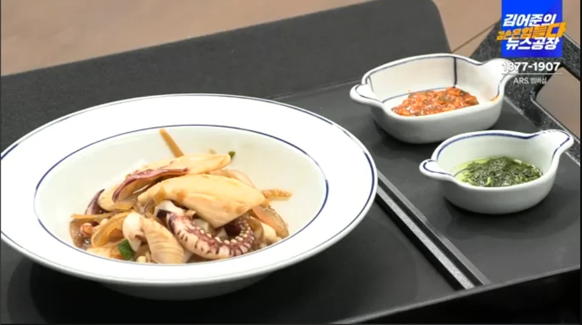
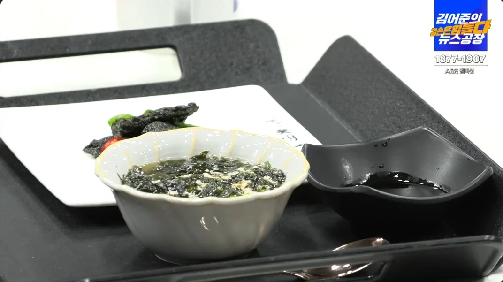
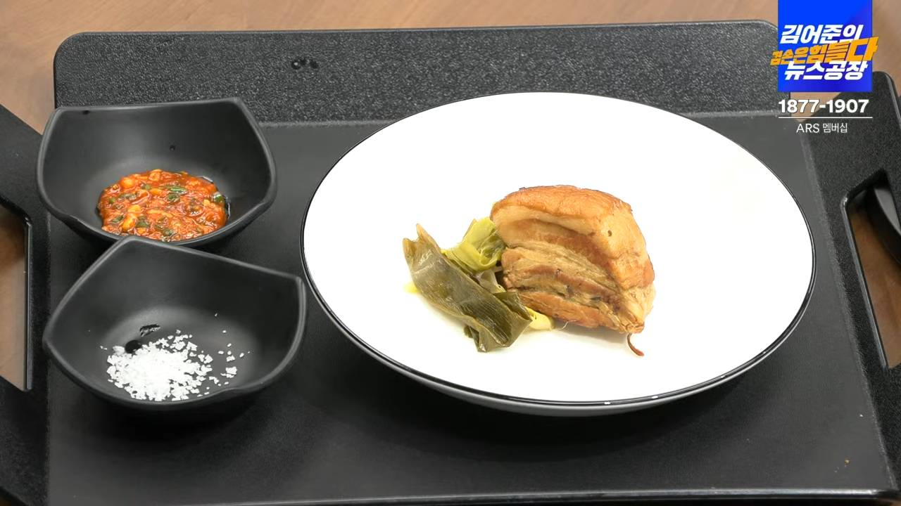
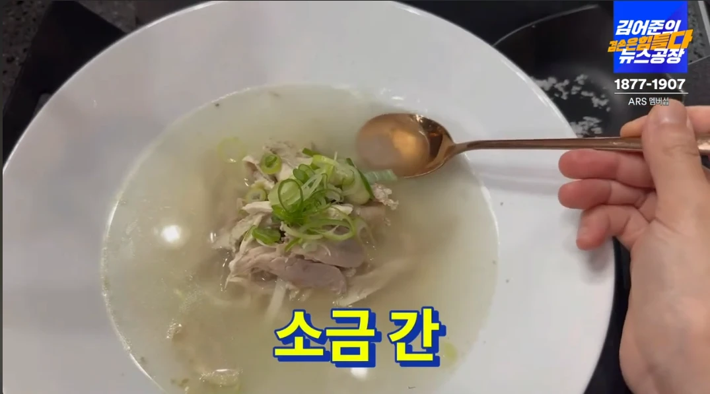
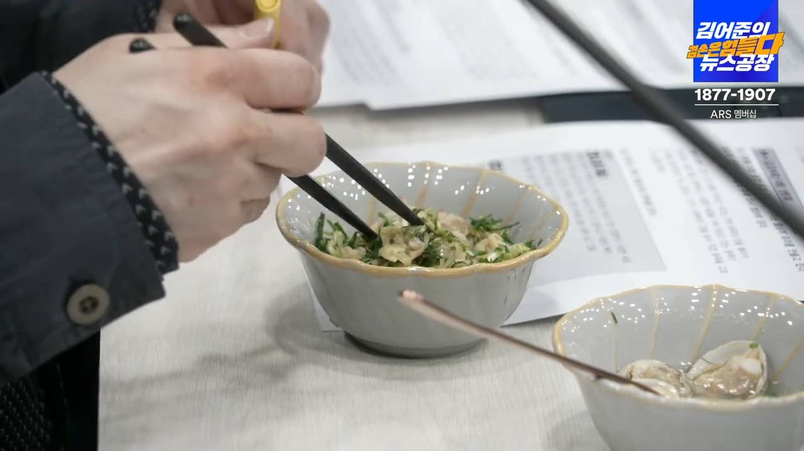
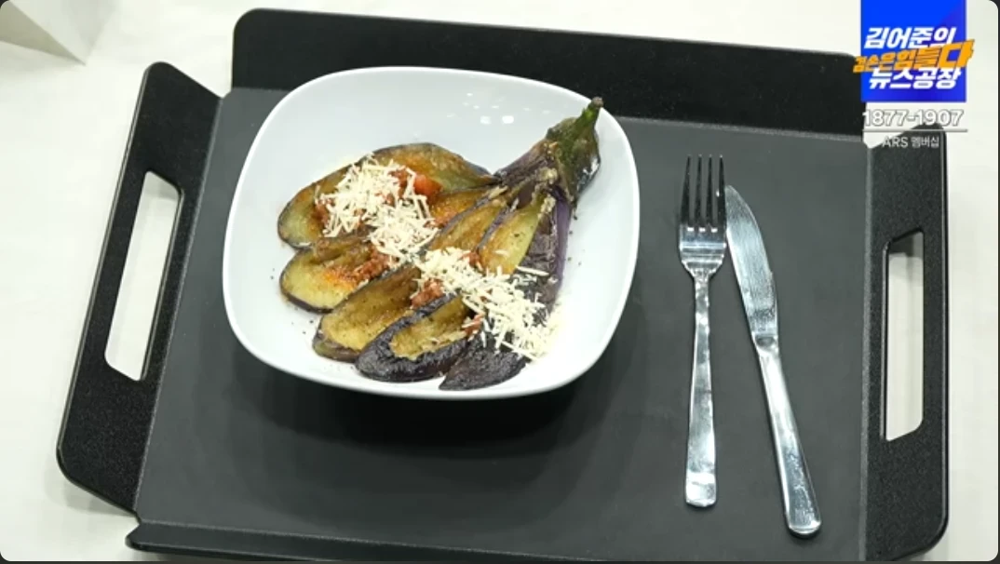
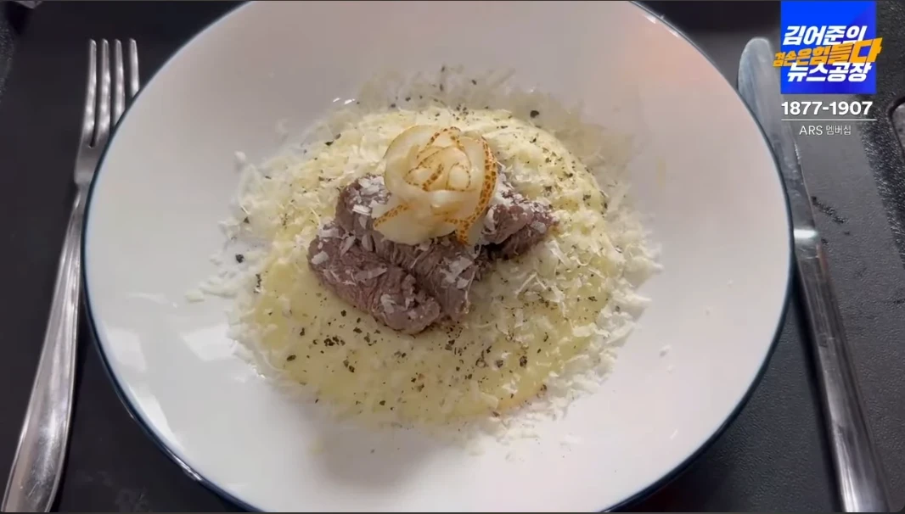
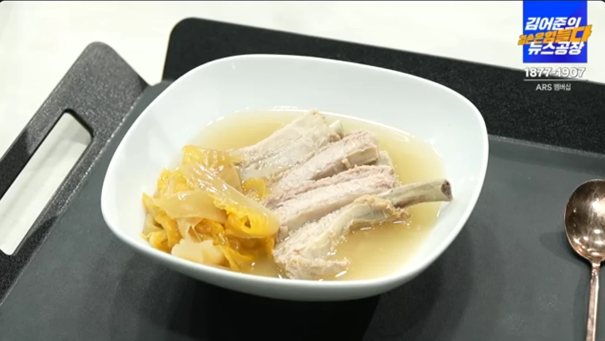
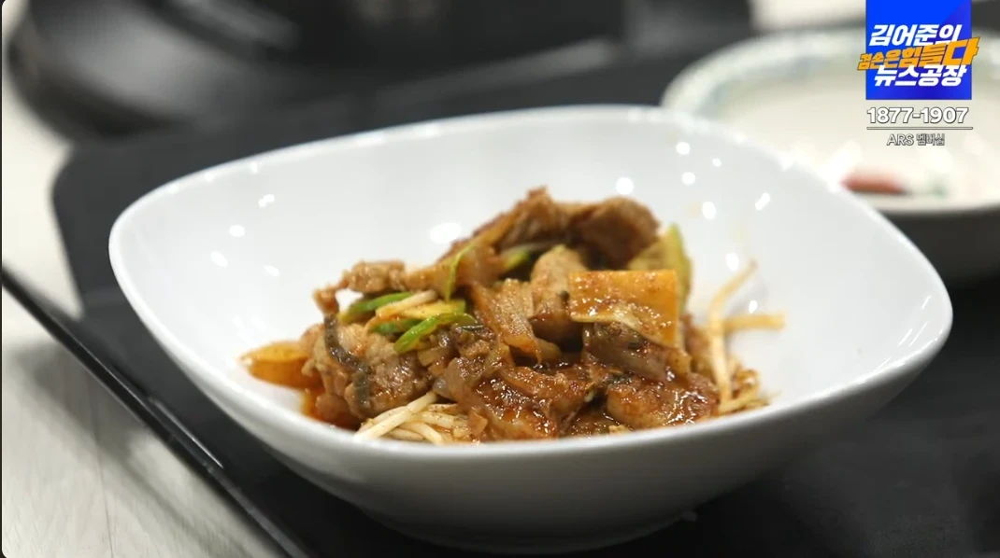
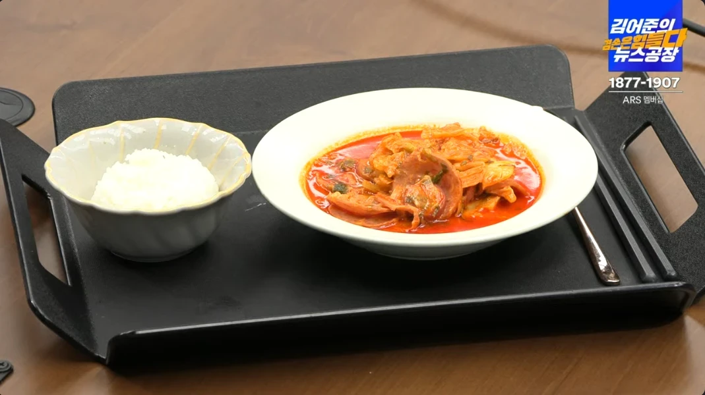
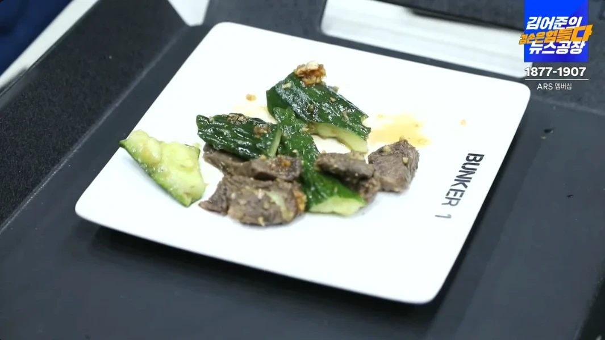
| 정육·수산·유제품·계란 | |
|---|---|
| 오징어 | 1마리 |
| 흰다리새우(껍질째) | 400g |
| 원초 생김 | 1봉 |
| 계란 | 1판 |
| 삼겹살 덩어리(대파육용) | 700g |
| 우리맛닭 | 1마리 |
| 통조림 햄 | 1캔 |
| 채소 | |
|---|---|
| 방아잎 | 소량 |
| 무 | 1/2개 |
| 풋고추 | 2개 |
| 대파 | 4대 |
| 노지 시금치 | 1단 |
| 마늘 | 1통 (1~2주 공용) |
| 양념·소스 (+다음 주 상비) — 종류 주의 | ||
|---|---|---|
| 조선간장 (샘표 등) | 1병 | 양조간장 말고 · 오징어·대파육 |
| 백간장 (연한 국간장) | 1병 | 새우무국 · 진간장 말고 |
| 올리브오일 | 1병 | 엑스트라버진 OK |
| 레몬 | 2~3개 | 생레몬 즙 · 병즙보다 생 |
| 들기름 | 1병 | 국산 · 참기름 아님 |
| 양조식초 1배 | 1병 | 사과·감식초·2배 말고 · 새우무국(간장:식초=2:1) + 2주 오이·부대 |
| 감자전분 | 1봉 | 옥수수전분 말고 · 2주 가지 코팅 + 생김국 소량 |
| 부침가루 | 1봉 | 시판 부침가루 |
| 통후추 | 1통 | 통알 · 가루 말고 |
| 버터 · 치즈가루 · 견과 · 식빵 | - | 시금치샌드 + 2주 이월용 버터 |
| 정육·수산·유제품·계란 | |
|---|---|
| 동죽 | 700g (월 점심) |
| 다진 소고기 | 300g |
| 소고기 안심(스테이크용) | 200g |
| 참소라 | 4~5개 |
| 냉장 등갈비 | 500g |
| 삼겹살 | 500g |
| 햄·소시지 | 각 150g |
| 불고기/한우용 소고기 | 300g |
| 두부 | 1모 |
| 우유 | 500ml |
| 치즈(슬라이스) | 적당량 |
| 채소 | |
|---|---|
| 생달래 | 소량 |
| 가지 | 3개 |
| 노각(늙은 오이) | 1개 |
| 감자 | 3개 |
| 묵은지 | 300g |
| 양배추 | 1/4통 |
| 가시오이 | 4개 |
| 콩나물 | 300g |
| 대파 | 2대 |
| 양파 | 1개 |
| 양념·소스 (2주차 전용) | ||
|---|---|---|
| 토마토 파스타소스 | 1병 | 폰타나 등 · 케첩 X |
| 초피가루(제피가루) | 1통 | 제육 · 없으면 산초 · 후추 X |
| 고추장 | 1통 | 시판 고추장 · 초고추장 X |
| 두테기름 | - | 없으면 식용유+버터 |
| 사골 코인육수 | 1팩 | 부대찌개 |
| 땅콩버터 | 1병 | 부대찌개 |
| 멸치 다시팩 | 1봉 | 하얀 김치찜 |
| 식초·전분은 1주차 산 양조식초 1배 / 감자전분 그대로 씀 | ||